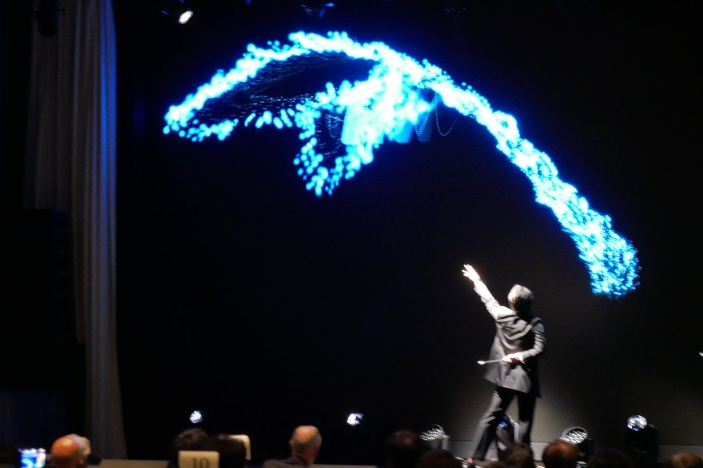

미디어 매직 퍼포먼스는 마술과 일루전, 미디어 아트를 하나의 무대로 엮은 공연입니다. 마술사의 손짓과 소품에 맞춰 스크린 영상이 움직여 행사 오프닝이나 엔딩을 짧고 강하게 만듭니다. 메이커팀은 행사 주제를 담은 맞춤 공연부터 로고와 문구만 바꿔 쓰는 템플릿 공연, 단독 마술 콘서트까지 행사 규모에 맞춰 고릅니다.
이런 행사에 좋아요
- 기업 행사 오프닝·엔딩 공연
- CI 선포식·창립 기념식
- 브랜드 프로모션·신제품 발표
- 기업 패밀리데이·문화회식
- 컨퍼런스·기념행사 축하공연
공연 구성
| 구성 | 시간 | 내용 |
|---|---|---|
| 맞춤 미디어 퍼포먼스 | 약 3~7분 | 스토리보드 구성부터 미디어 아트 제작, 마술·일루전 퍼포먼스 창작까지 |
| 템플릿 미디어 퍼포먼스 | 약 3~7분 | 완성된 작품에 로고·타이틀·문구·이미지를 넣고 음향 효과 등 포인트 수정 |
| 맞춤 마술 퍼포먼스 | 약 3~7분 | 행사 기획에 맞춘 스토리텔링형 마술, 소품 맞춤 제작 |
| 마술·일루전 쇼 | 약 5~40분 | 행사 규모에 맞춘 콘서트 형식의 마술쇼 |
| 마술 콘서트 | 약 40~90분 | 야외·소공간부터 1,000석 규모 극장까지, 어린이부터 성인까지 |
준비할 것
- 영상을 띄울 스크린(LED 또는 프로젝터)과 송출 장비
- 맞춤 공연은 조명 메모리와 리허설 약 1시간, 템플릿 공연은 약 30~40분
- 미디어 공연은 홀로그램 공연으로 바꿀 수 있음(추가 비용 별도)
협력팀 주요 무대
- 대학병원 국제 간호사의 날 기념행사
- 프로스포츠 연맹 창립 20주년 기념행사
- 그룹 CI 선포식
- 2021 부산 MICE 로드쇼
- 기업 패밀리데이
진행 순서
- 문의: 날짜·장소·행사 순서·스크린 사양 확인
- 공연 구성(맞춤·템플릿·콘서트) 제안과 견적
- 계약: 주식회사 위메이커 명의
- 맞춤 공연은 스토리보드·영상 시안 협의
- 행사 당일 조명·영상 리허설과 공연
자주 묻는 질문
맞춤 공연과 템플릿 공연은 어떻게 다른가요?
맞춤 공연은 행사 주제에 맞춰 스토리보드부터 영상과 퍼포먼스를 새로 만듭니다. 템플릿 공연은 완성된 작품에 로고·타이틀·문구 같은 요소를 넣어 준비 기간이 짧습니다.
어떤 장비가 필요한가요?
영상을 띄울 스크린(LED 또는 프로젝터)과 송출 장비가 필요합니다. 행사장에 없으면 메이커팀이 무대 시스템과 함께 준비합니다.
리허설 시간은 얼마나 필요한가요?
맞춤 공연은 조명 메모리와 리허설에 약 1시간, 템플릿 공연은 약 30~40분을 잡습니다.
단독 공연으로도 할 수 있나요?
네. 5~40분 마술쇼나 40~90분 마술 콘서트로 문화회식이나 기획 공연에도 맞춥니다.